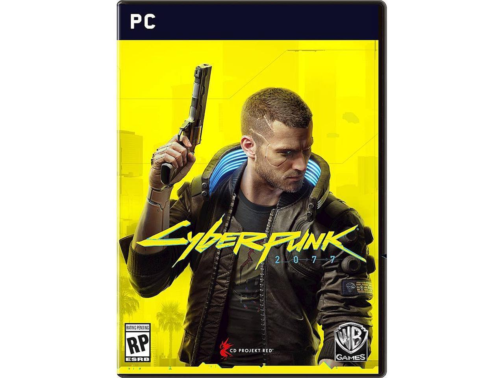

Cyberpunk 2077 is an upcoming role-playing video game
developed and published by CD Projekt. It is scheduled to be
released for Microsoft Windows, PlayStation 4, Stadia, and Xbox One
on 17 September 2020. Adapted from the Cyberpunk franchise, it
takes place in dystopian Night City, an open world with six
distinct regions. Players assume the role of the customisable
mercenary V in a first-person perspective, acquiring skills in
hacking and machinery, an arsenal of ranged weapons, and options
for melee combat. Both lethal and non-lethal playthroughs are
possible.
Cyberpunk 2077 (Recommended System Requirements)
- OS: Windows 10 64-bit
- CPU: Intel i7-6700K
- Video: GeForce GTX 1070
- Dedicated Video RAM: 6GB RAM: 16GB
- HDD: 70GB